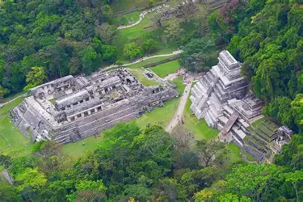
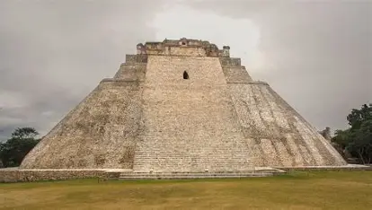

Chichén Itzá
Importante ciudad maya de Yucatán, reconocida por El Castillo y otros edificios ceremoniales.
Templos, palacios y ciudades que muestran el conocimiento y la creatividad de esta civilización.
Importante ciudad maya de Yucatán, reconocida por El Castillo y otros edificios ceremoniales.

Zona arqueológica conocida por sus templos, relieves y arquitectura integrada al entorno natural.

Ciudad destacada por sus edificios monumentales y la decoración de estilo Puuc.

Una de las grandes ciudades mayas de Guatemala, famosa por sus templos elevados.
Los constructores mayas trabajaban con materiales como la piedra caliza y utilizaban conocimientos de planificación y técnicas constructivas. Sus ciudades incluían templos, palacios, plazas y espacios para actividades ceremoniales y sociales.
Los edificios mayas permiten estudiar su organización social, sus creencias y sus conocimientos técnicos. Muchas zonas arqueológicas son actualmente espacios de investigación, conservación y aprendizaje histórico.